Agent-based simulations for optimized prevention of the spread of SARS-CoV-2 in nursing homes
Complexity Science Hub Vienna | Medical University Vienna
Jana Lasser | lasser@csh.ac.at | @janalasser
slides available at
https://github.com/JanaLasser/talks/tree/master/nursing_home_covid
motivation
- High mortality
- Close living conditions in homes → easy spread
- Balance between quality of life and safety
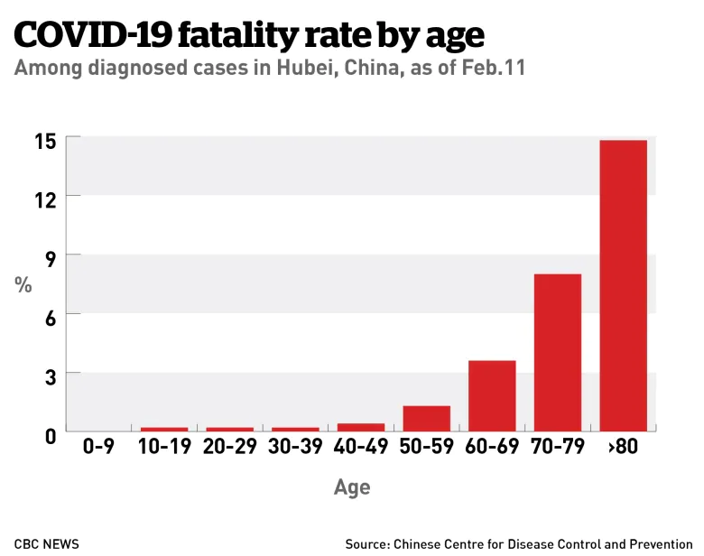
aim
Use agent based simulations
in a model of an Austrian nursing home
to find the best prevention strategy.
Agent based simulations
- two types of agents: residents, employees
- agents have an infection state
agent states
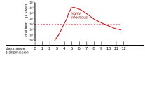
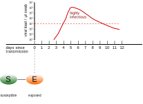
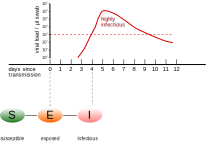
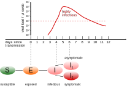
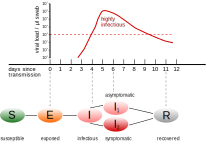
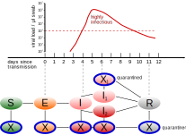
floor plan and interactions
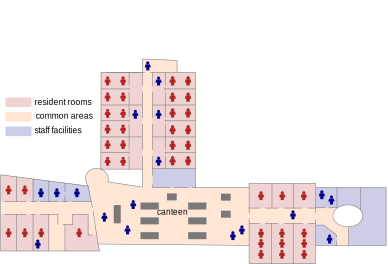


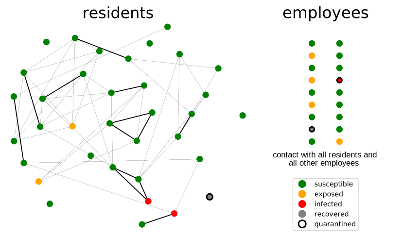
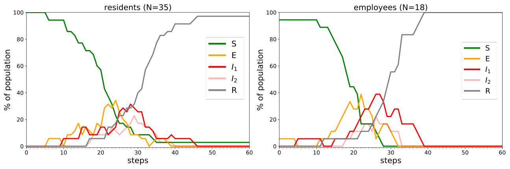
Interventions
- diagnostic testing → test symptomatic agents
- isolation → quarantine contacts after positive result
- preventive testing → test all agents in fixed intervals
test types
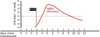
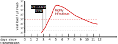
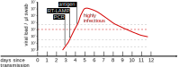
In practice: accuracy
- PCR tests detect before becoming infectious
- RT-LAMP tests detect infectious persons
- Antigen tests detect after becoming infectious
In practice: time until result
- PCR tests tage 1-2 days to return results
- RT-LAMP tests take up to 1 day to return results
- Antigen tests detect only minutes to return results
Important for quarantine decisions!
Calibration using outbreak data from nursing homes
Scenario:
- introduce index case through an employee
- only dagnostic testing
- PCR tests with 2-day turnover
- quarantine of close contacts (roommates, table neighbours) after positive test result
→ adjust transmission risk and contact weights to reproduce outbreak data
employee index case: R0 = 2.61 ± 1.33
resident index case: R0 = 4.82 ± 2.01
Different prevention strategies
- baseline: only diagnostic testing
- on top of that: preventive screening with
- different test technology (accuracy)
- different result turnover time
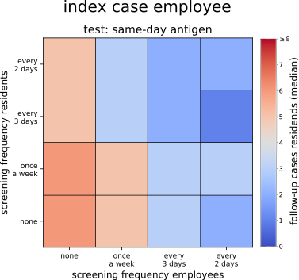
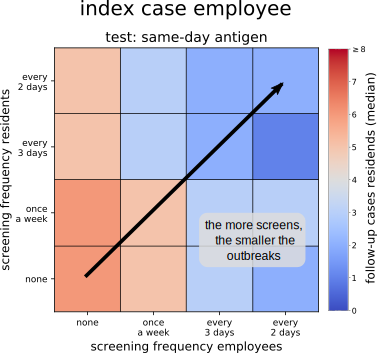
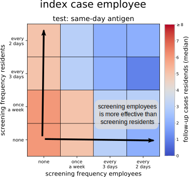
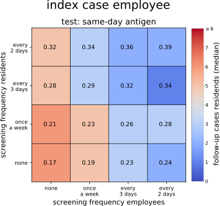
tests per person per day
Different test technologies
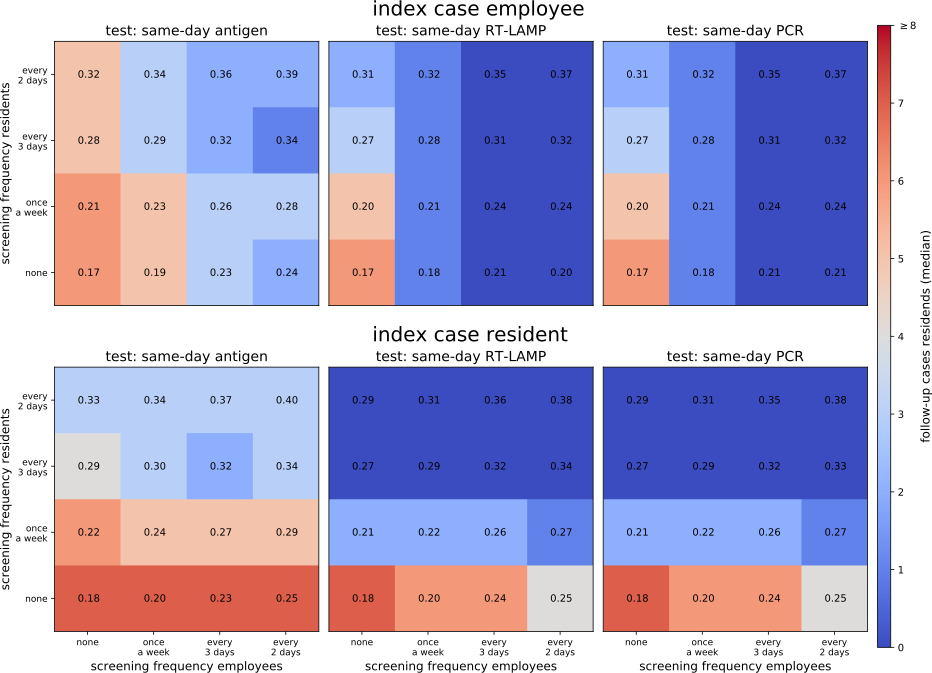
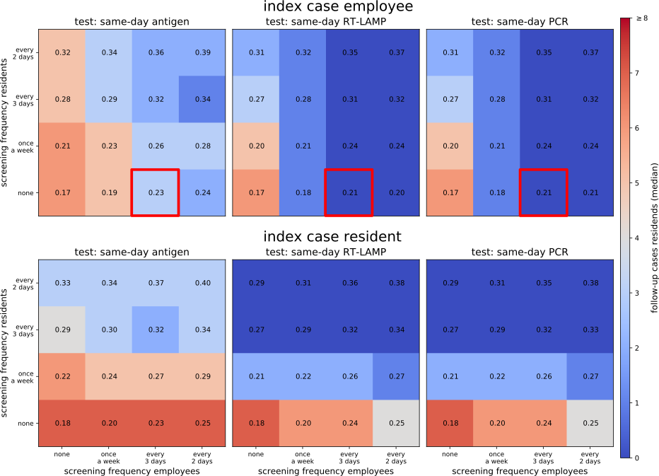
Different turnover times
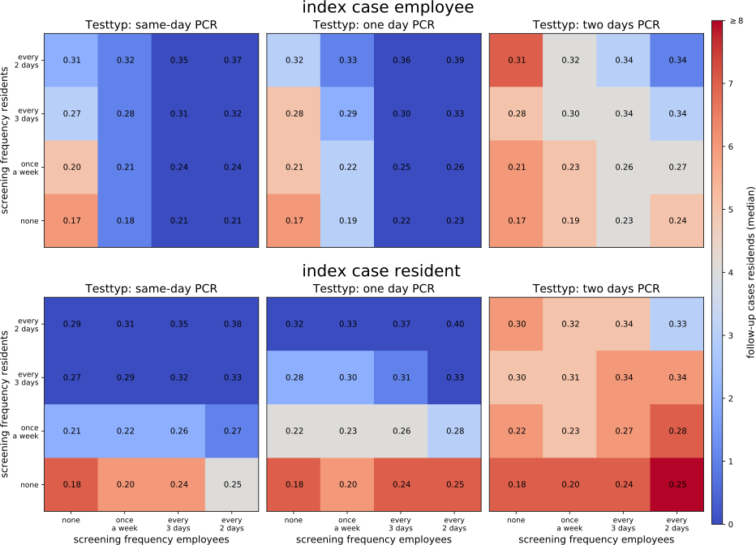technical notes
- existing stable library
- easy to extend
- out-of-the-box functionality
self.datacollector.collect()self.schedule.step()
Outlook
- Caritas is implementing an optimized prevention strategy in their homes
- To date: 18 asymptomatic positive employees identified with preventive testing
- 7 in the last week
- Maximum of 1 follow-up case per index case
- Follow-up study comparing Caritas and other nursing homes
Summary
- Agent based simulations, micro-calibrated to nursing home situation
- Optimal prevention strategy:
- test employees every 3 days
- use PCR or RT-LAMP tests with a maximum of 1 day result turnover
- Result: maximum of one follow-up infection per index case
see also:
simulation on GitHub | preprint
Agent-based simulations for optimized prevention of the spread of SARS-CoV-2 in nursing homes Complexity Science Hub Vienna | Medical University Vienna Jana Lasser | lasser@csh.ac.at | @janalasser slides available at https://github.com/JanaLasser/talks/tree/master/nursing_home_covid